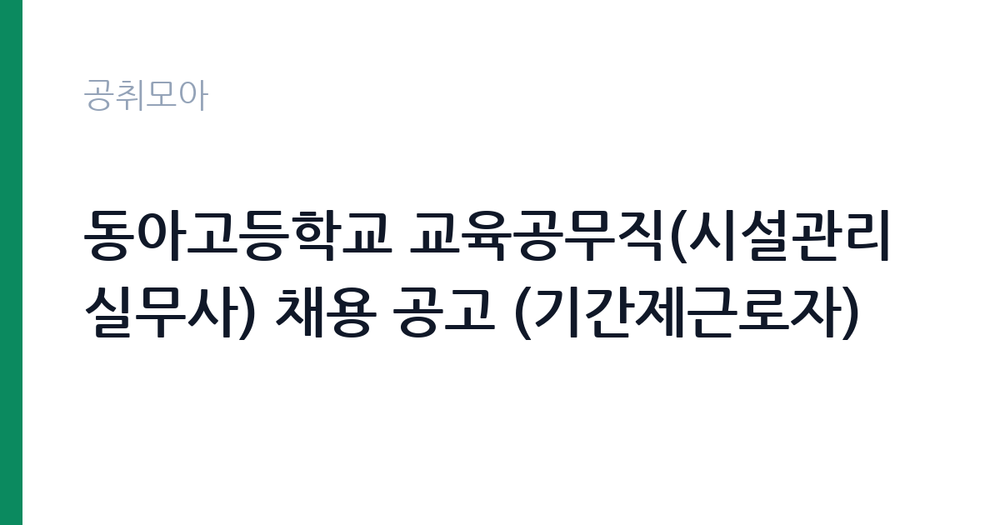

[교육청] 동아고등학교 교육공무직(시설관리실무사) 채용 공고 (기간제근로자)
부산광역시교육청 동아고등학교 · 부산 · 마감 2026-10-06 (D-13) · 출처 나라일터

한눈에 보는 모집 조건
| 기관 | 부산광역시교육청 동아고등학교 |
|---|---|
| 공고명 | 동아고등학교 교육공무직(시설관리실무사) 채용 공고 (기간제근로자) |
| 고용형태 | 공무직 |
| 근무지 | 부산 |
| 게시일 | 2026-09-23 |
| 마감일 | 2026-10-06 (D-13) |
지원자격, 이렇게 읽으세요
- 시설관리실무사 1명
- 접수 ~2026-10-06 마감
- 세부 조건은 원문 공고문 확인
공고문의 응시자격은 짧게 쓰여 있지만 실제로는 세 가지를 봅니다. 첫째 결격사유 해당 여부, 둘째 자격·경력의 직무 연관성, 셋째 근무 시작 가능일입니다. 셋 중 하나라도 애매하면 원문 공고문의 세부 조항을 먼저 확인하고 지원서를 쓰세요. 특히 부산광역시교육청 동아고등학교 공고는 공무직 전형이라 서류에서 직무 연관 키워드(교육청)를 명시하는 게 유리합니다.
이 공고의 포인트
이 공고의 관전 포인트는 ''입니다. 부산광역시교육청 동아고등학교이 내건 조건 가운데 '시설관리실무사 1명' 대목이 서류의 분수령이 됩니다. 해당되면 주저 없이 지원하고, 애매하면 원문 공고문의 세부 조항을 먼저 대조해 보세요. D-13 일정상 오늘 내로 판단하는 게 좋습니다.
전형은 어떻게 진행되나
전형은 서류심사로 시작해 면접심사로 끝나는 2단계가 기본입니다. 서류 단계의 평가자는 지원서와 자기소개서에서 직무 적합성을 찾고, 면접 단계에서는 실무 이해도와 오래 근무할 사람인지를 확인합니다. 마감일(2026-10-06) 당일 접수는 시스템 지연이 잦으니 하루 먼저 끝내 두는 게 안전합니다. 접수번호와 수험표 출력까지 마쳐야 접수가 완료됩니다.
이런 분께 추천해요
- 부산 근무가 가능한 분 — 통근·거주 조건이 맞는지가 1순위입니다
- 공무직 전형을 찾는 분 — 교육청 분야 관심자라면 우선 검토 대상입니다
- 마감(2026-10-06) 안에 서류를 낼 수 있는 분 — D-13이니 오늘 지원서 초안부터 잡으세요
지원 전 체크리스트
- 원문 공고문의 응시자격·결격사유 정독했는가
- 자격증·경력증명서 등 증빙 스캔 준비됐는가
- 마감일(2026-10-06) 전날까지 접수 가능한가
- 근무지(부산)·근무형태(공무직) 감당 가능한가
모집 일정과 제출 타이밍
게시일은 2026-09-23, 마감은 2026-10-06입니다. 남은 기간은 약 13일입니다. 서류 준비에 12일을 쓰고 마지막 하루는 접수·확인용으로 남겨두세요. 공공 채용은 마감일 24시간 전부터 지원자가 몰려 접수 페이지가 느려지거나 증빙 업로드가 실패하는 일이 잦습니다. 일정 운영의 정석은 이렇습니다. 첫날에는 공고문과 직무기술서를 출력해 응시자격·우대사항에 형광펜을 치고, 중간 기간에는 자기소개서 초안과 증빙 스캔을 끝내고, 마감 전날에는 접수 시스템에 미리 입력까지 마쳐 두는 것입니다. 마감 당일에 처음 접속하는 지원자가 가장 많이 탈락합니다. 접수번호가 발급되고 수험표(또는 접수확인서)가 출력돼야 접수가 끝난 것이니, 제출 후 확인증까지 꼭 챙기세요.
직무 이해하기: 교육청
학교·교육청 채용의 실무는 학사 지원, 급식·돌봄 보조, 행정실무가 중심입니다. 교원자격증이나 관련 자격증 소지 여부가 서류의 핵심 변수이므로 자격 취득일과 자격번호를 정확히 기재하세요. 방학 중 근무 조건이 평소와 다른 경우가 많아 원문의 근무조건란을 별도로 확인해야 합니다. 부산광역시교육청 동아고등학교의 이번 채용(공무직)도 같은 잣대로 보면 됩니다. 공고 제목에 적힌 분야명과 직무기술서의 필요역량을 나란히 놓고, 본인 경험에서 겹치는 키워드를 세 개 이상 뽑아보세요. 그 세 개가 자기소개서와 면접 답변의 뼈대가 됩니다.
자기소개서 작성 팁
공공기관 자기소개서 심사는 화려한 문장보다 직무 연관 경험의 구체성을 봅니다. 첫 문단에는 지원 분야(교육청)와의 연결고리를 한 줄로 선언하고, 본론에는 숫자(기간·규모·성과)가 들어간 경험 두 개를 배치하고, 마무리는 입사 후 1년 안에 해낼 일을 적으세요. 부산광역시교육청 동아고등학교 지원서에 흔한 감점 요인은 세 가지입니다. 모집 분야와 무관한 장황한 성장 과정, 증빙 없는 주장(자격·경력), 그리고 마감일 오기재입니다. 특히 공무직 전형은 실무 투입 속도를 보기 때문에 즉시 근무 가능함을 문장으로 명시하면 좋습니다.
면접 준비 포인트
면접 준비의 핵심은 자소서 방어와 기관 이해입니다. 적은 경험을 조리 있게 설명할 수 있어야 하고, 부산광역시교육청 동아고등학교이 무슨 일을 하는 기관인지 한 가지 사업이라도 말할 수 있어야 합니다. 지원 분야(교육청) 지식과 연결 지으면 점수가 오릅니다. 끝인사에서는 근무지(부산)·공무직 조건을 수용한다는 의사를 분명히 하세요. 일찍 도착해 여유를 갖고, 두괄식으로 답하는 지원자가 좋은 인상을 남깁니다.
급여·근무조건 읽는 법
급여표를 볼 때는 기본급과 실수령액을 구분해야 합니다. 공고문 수치는 대개 기본급이라 수당·상여가 빠진 금액입니다. 공무직 모집에서는 계약 기간과 갱신 조건, 4대 보험·퇴직금 적용이 핵심 체크 항목입니다. 부산광역시교육청 동아고등학교 원문의 보수 규정을 펼치고, 근무지(부산)가 외곽이거나 야간·주말 근무가 있다면 주거·교통 지원 조항까지 확인한 뒤 지원서를 내세요.
자주 묻는 질문
- 마감일(2026-10-06)을 넘기면 지원할 수 있나요?
없습니다. 공공 채용은 마감 시각 이후 접수를 받지 않습니다. 시스템 마감 1시간 전에는 대기열이 길어지니 D-13을 보고 미리 제출하세요. - 부산 외 거주자도 지원 가능한가요?
공고에 거주 제한이 별도로 없으면 전국 지원이 가능합니다. 다만 일부 지자체·교육청 공고는 거주·이전 조건이 붙으니 원문 응시자격란을 확인하세요. - 공무직 전형에서 가장 중요한 서류는 무엇인가요?
직무 연관성을 보여주는 자기소개서와 증빙(자격증·경력증명서)입니다. 부산광역시교육청 동아고등학교 심사는 정량(자격·경력)과 정성(지원동기·직무이해)을 함께 봅니다.
함께 보면 좋은 공고
[교육청] 2026 동부 교육법률지원단(학교폭력 분야) 변호사 채용 — 마감 2026-09-28[교육청] 서울신구초등학교 2026년 지방공무원 대체직원(시설관리) 채용 공고 — 마감 2026-09-29[교육청] 2026년도 하반기 충청남도교육청 일반임기제공무원 경력경쟁임용시험 시행계획 공고(노무사, 전문상담사, 진로교육사, 보건관리자, 직업교육사, 영상제작, 특수취업지원관) — 마감 2026-10-16출처: 나라일터 공개정보를 바탕으로 공취모아가 정리한 안내글입니다. 모집 조건·일정은 변경될 수 있으니 지원 전 반드시 원문 공고문을 확인하세요. 본 글은 정보 제공용이며 합격을 보장하지 않습니다.